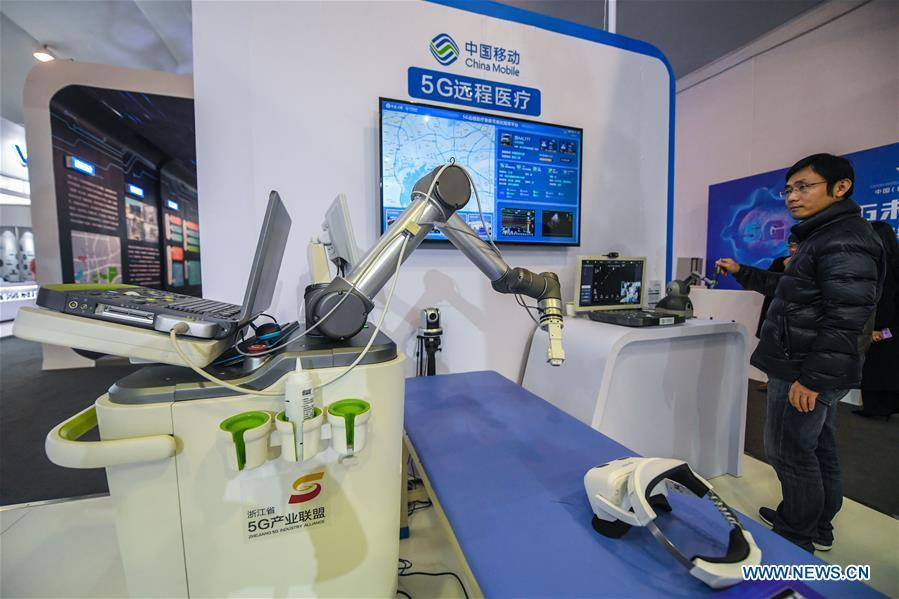
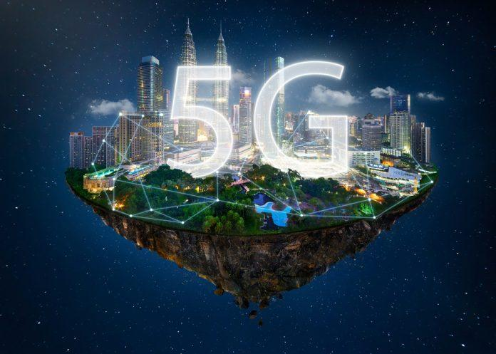

1 / 7

2 / 7
Smart City
3 /7

Robotics Technology
4/ 7
VR Technology
5/ 7
5G Technology
6/ 7
5G Database
7/ 7

A: 5G is the 5th generation mobile network. It is a new global wireless standard after 1G, 2G, 3G, and 4G networks. 5G enables a new kind of network that is designed to connect virtually everyone and everything together including machines, objects, and devices.
5G wireless technology is meant to deliver higher multi-Gbps peak data speeds, ultra low latency, more reliability, massive network capacity, increased availability, and a more uniform user experience to more users. Higher performance and improved efficiency empower new user experiences and connects new industries.
First generation - 1G 1980s: 1G delivered analog voice.
Second generation - 2G Early 1990s: 2G introduced digital voice (e.g. CDMA- Code Division Multiple Access).
Third generation - 3G Early 2000s: 3G brought mobile data (e.g. CDMA2000).
Fourth generation - 4G LTE 2010s: 4G LTE ushered in the era of mobile broadband.
1G, 2G, 3G, and 4G all led to 5G, which is designed to provide more connectivity than was ever available before.
5G is a unified, more capable air interface. It has been designed with an extended capacity to enable next-generation user experiences, empower new deployment models and deliver new services.
With high speeds, superior reliability and negligible latency, 5G will expand the mobile ecosystem into new realms. 5G will impact every industry, making safer transportation, remote healthcare, precision agriculture, digitized logistics — and more — a reality.
• $13.1 Trillion dollars of global economic output
• $22.8 Million new jobs created
• $265B global 5G CAPEX and R&D annually over the next 15 years
Through a landmark 5G Economy study, we found that 5G’s full economic effect will likely be realized across the globe by 2035—supporting a wide range of industries and potentially enabling up to $13.1 trillion worth of goods and services.
This impact is much greater than previous network generations. The development requirements of the new 5G network are also expanding beyond the traditional mobile networking players to industries such as the automotive industry.
The study also revealed that the 5G value chain (including OEMs, operators, content creators, app developers, and consumers) could alone support up to 22.8 million jobs, or more than one job for every person in Beijing, China. And there are many emerging and new applications that will still be defined in the future. Only time will tell what the full “5G effect” on the economy is going to be.